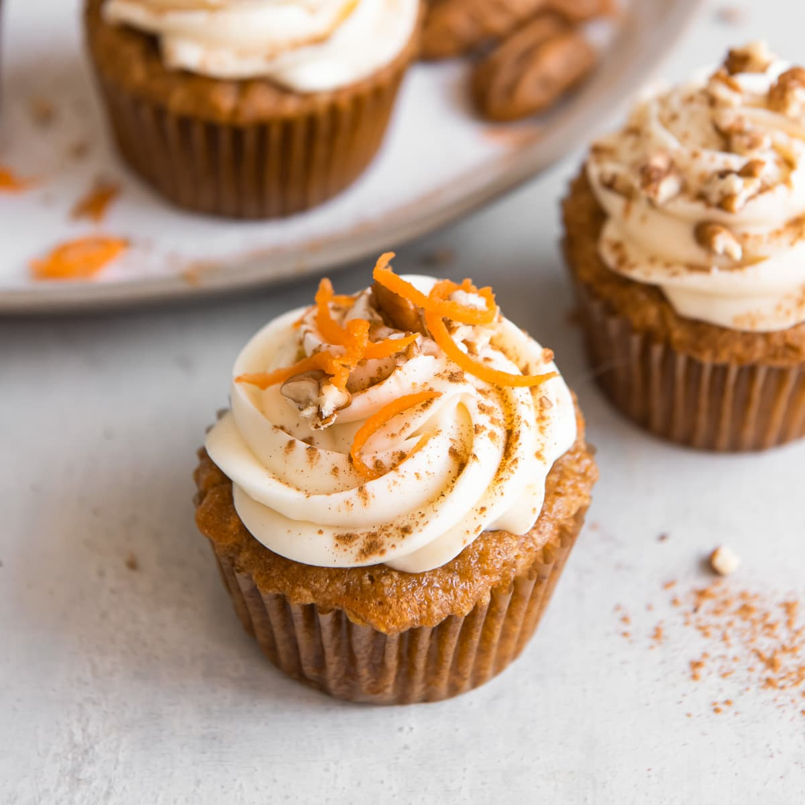

Home
Carrot Cupcakes

Descripction
Carrot cupcake is a moist and spiced mini cake made with grated carrots and yogurt, which gives it a soft texture and light flavor. It’s sweet, aromatic, and perfect for any occasion.
Ingredients
- 150g Carrots
- 2 Eggs
- 50g Dates or 1 Banana
- 40g Flour
- 1 Cinamon spoon
- 8g Baking Powder
Steps
- Blend all the ingredients and divide the mixture into molds lightly greased with coconut or olive oil.
- Bake for 20 minutes at 180 degrees.
- Let them cool completely and carefully remove the cupcakes from the molds.
- Lightly dip them in yogurt and sprinkle a little more cinnamon on top.